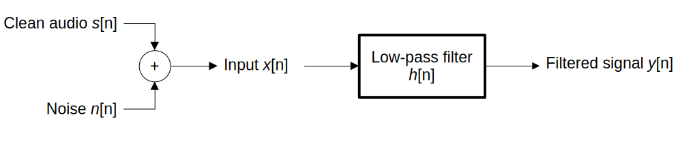
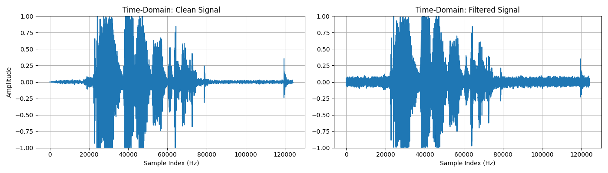
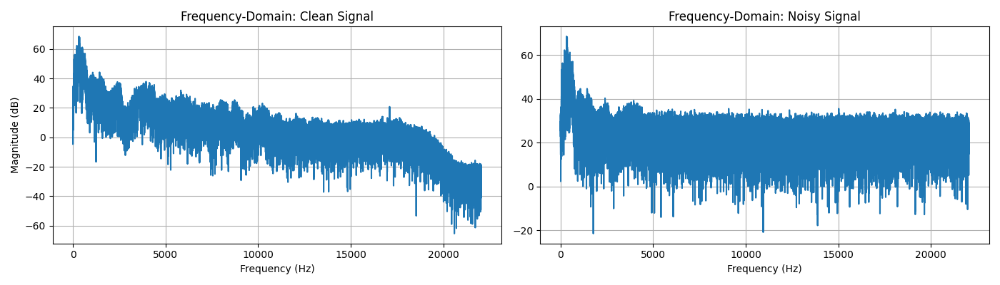
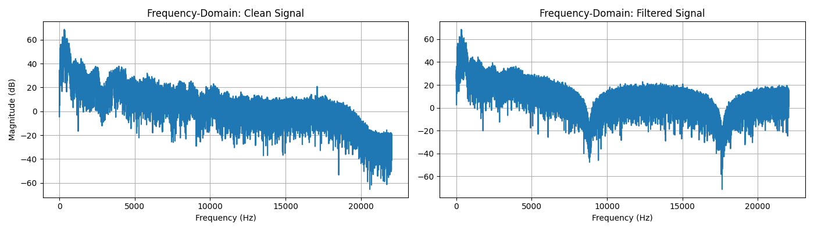

Overview
High-frequency noise reduction via moving-average filtering
A Python project demonstrating high-frequency noise reduction in audio signals using a discrete-time LTI moving-average low-pass filter, with analysis in both the time- and frequency-domains. Originally built as extra credit for a course.
A clean audio sample is loaded, artificial Gaussian noise is added, and a discrete-time LTI low-pass filter is then applied to recover a cleaner version of the signal. Results are visualized at each stage — clean vs noisy, and clean vs filtered. The audio used was a short recording of my own voice.

01 — Problem Definition
Modelling the System
The system models a noisy input signal as the sum of a clean audio signal and additive high-frequency noise. A moving-average filter is then applied via discrete convolution to attenuate the noise.
x[n] = s[n] + n[n] (noisy input)
h[n] = 1/N, n = 0, 1, ..., N-1 (filter impulse response)
y[n] = x[n] * h[n] (filtered output via convolution)
N is the filter length — it controls how many samples are averaged together. A larger N means stronger high-frequency attenuation but more smoothing of the original signal.
02 — Implementation
Loading, Filtering & Analysis
Loading & Preprocessing
The audio file is read into a NumPy array using soundfile. Since some recordings are stereo, the script checks the number of dimensions and averages both channels down to mono if needed.
signal_clean, sample_rate = sf.read(audio_file) # convert stereo to mono if needed if signal_clean.ndim == 2: signal_clean = signal_clean.mean(axis=1)
Adding Noise
Gaussian noise is generated with np.random.randn and scaled by a noise amplitude constant. The noisy signal is clipped to [-1, 1] to prevent distortion when saving as a .wav file.
noise_amp = 0.05 noise = noise_amp * np.random.randn(len(signal_clean)) signal_noisy = signal_clean + noise signal_noisy = np.clip(signal_noisy, -1.0, 1.0)
Applying the Filter
The moving-average filter is constructed as an impulse response array of length N, then applied via np.convolve with mode='same' to preserve the original signal length.
N = 5 h = np.ones(N) / N # impulse response: h[n] = 1/N signal_filtered = np.convolve(signal_noisy, h, mode='same') signal_filtered = np.clip(signal_filtered, -1.0, 1.0)
Frequency-Domain Analysis
FFTs are computed for all three signals using np.fft.fft. Magnitudes are converted to decibels — the linear scale made the clean and noisy spectra look nearly identical, so the logarithmic scale was necessary to reveal actual differences.
fft_clean = np.fft.fft(signal_clean) fft_noisy = np.fft.fft(signal_noisy) fft_filtered = np.fft.fft(signal_filtered) freqs = np.fft.fftfreq(len(signal_noisy), 1 / sample_rate) # plot magnitude in dB (log scale) 20 * np.log10(np.abs(fft_noisy)[:len(freqs)//2] + 1e-12)
03 — Results
Time & Frequency Domain Analysis
Time-Domain — Clean vs Noisy
The noisy signal retains the same overall waveform shape as the clean signal, but shows a noticeably increased amplitude spread across all samples due to the added Gaussian noise.

Time-Domain — Clean vs Filtered
After filtering, the amplitude spread is significantly reduced compared to the noisy signal, though it does not fully return to the clean signal's amplitude — a trade-off of the moving-average approach.

Frequency-Domain — Clean vs Noisy
On a logarithmic scale, the noisy signal shows a larger spread of magnitudes and an elevated noise floor that persists across higher frequencies.

Frequency-Domain — Clean vs Filtered
The filtered signal's magnitude range closely matches the clean signal, but introduces periodic nulls caused by the zeros of the moving-average filter's frequency response — a known characteristic of this filter type.

04 — Reflection
What I Learned
The most interesting result was the spectral nulls introduced by the moving-average filter. Going in, I expected cleaner output to simply mean a flatter noise floor — seeing the periodic cancellation pattern in the frequency domain made the theoretical behavior of FIR filter zeros concrete in a way that reading about it hadn't.
I also learned that linear frequency-domain plots were essentially useless for this analysis — the differences only became visible after switching to a logarithmic (dB) scale. That was a practical lesson in choosing the right representation for the data you're trying to inspect.
If I extended this project, I'd experiment with a proper windowed FIR filter (e.g. a Hamming-windowed sinc) to get a sharper frequency cutoff without the spectral nulls, and add a parameter sweep to visualize how filter length N affects the trade-off between noise reduction and signal preservation.